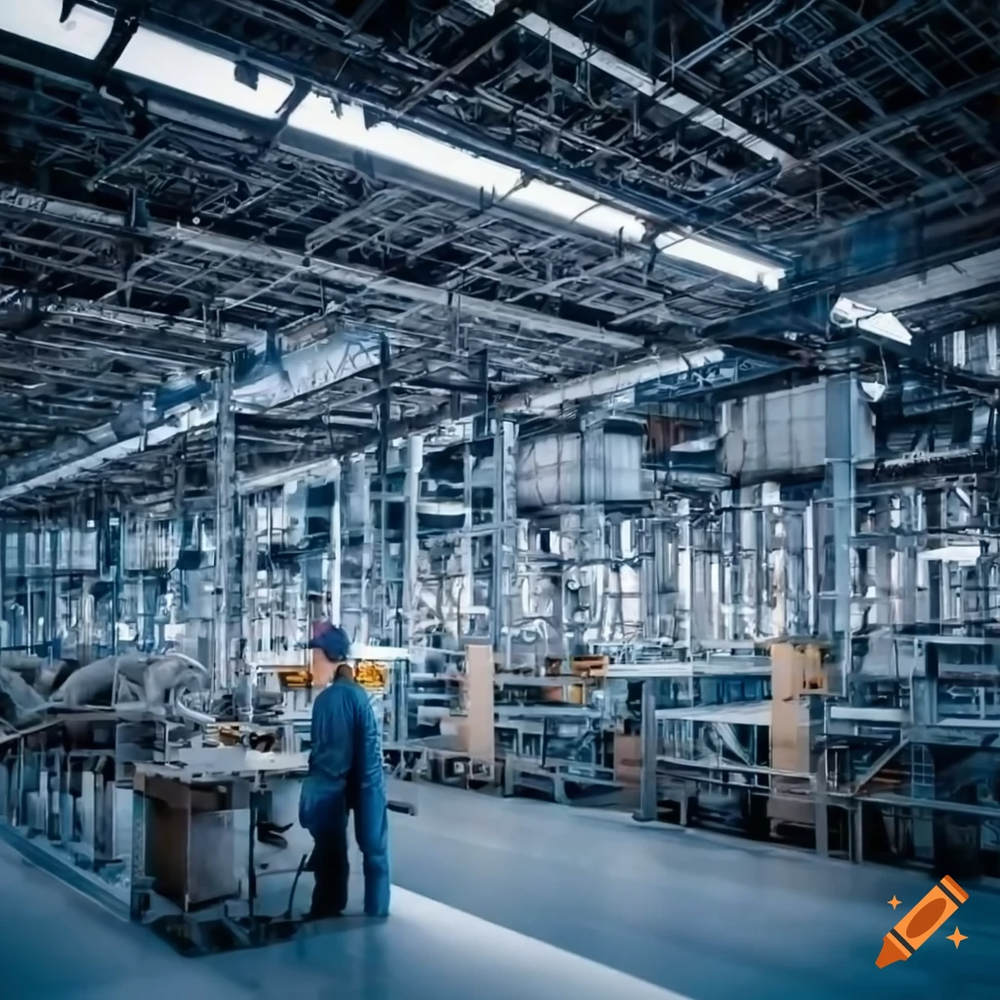

PRODUCTION

Production can be define as the process of creating goods and services. It involves transforming inputs such as raw materials, labor, and capital into finished products or services that can be consumed or used to create other goods.
TYPES OF PRODUCTION
-
Primary Production : This type involves the extraction and collection of natural resources.
It includes activities such as farming, fishing, mining, and forestry.
Primary production forms the basis for other types of production as it provides raw materials.
-
Secondary Production : This type involves the transformation of raw materials into finished or semi-finished goods. It includes manufacturing, construction, and processing industries. For example, turning timber into furniture or raw cotton into fabric.
-
Tertiary Production : This type involves the provision of services rather than goods. It includes activities such as retail, transportation, healthcare, education, and entertainment. Tertiary production supports primary and secondary production by facilitating the distribution and consumption of goods and services.
-
Quaternary Production : This type involves intellectual activities and services such as research and development, information technology, financial planning, and consulting. It is often referred to as the knowledge economy.
-
Quinary Production : This type involves high-level decision-making and includes services such as government administration, top-level management in businesses, and non-profit organizations. Quinary production influences the other types by setting policies and strategic directions.
EFFECT OF PRODUCTION ON THE ECONOMY
Positive Effects of Production on the Economy
-
Economic Growth : production of goods and services generates income and employment.
-
Employment Generation: Production activities create jobs across various sectors, reducing unemployment rates and increasing the income levels of individuals.
-
Technological Advancements: Advances in technology can enhance productivity, reduce costs, and lead to the development of new products and services.
-
Increased Exports: can lead to increased exports.
This improves the trade balance and brings foreign exchange into the economy.
-
Infrastructure Development: Production activities often require improved infrastructure,
such as transportation, communication, and energy.
Investments in these areas benefit the broader economy
by enhancing connectivity and efficiency.
-
Investment Attraction: can attract domestic and foreign investments.
Investors are drawn to economies with strong production
capabilities and growth potential, further boosting economic development.
Negative Effects of Production on the Economy:
-
Environmental Degradation : Intensive production activities, particularly in manufacturing and primary sectors, can lead to pollution, deforestation, and depletion of natural resources. Environmental degradation can have long-term economic costs, including health care expenses and loss of biodiversity.
-
Income Inequality : While production can generate wealth, it does not always distribute it evenly. Inequities can arise, with wealth concentrated among business owners and shareholders, leading to increased income inequality.
-
Overproduction : Overproduction can lead to excess supply, resulting in lower prices and reduced profitability for businesses. This can cause economic instability and affect industries reliant on stable pricing.
-
Economic Dependence : Economies heavily reliant on a single type of production, such as oil or agriculture, can become vulnerable to market fluctuations. Price volatility in these sectors can lead to economic instability.
-
Resource Depletion : Over-extraction of natural resources for production can lead to their depletion, jeopardizing future production capabilities and long-term economic sustainability.
-
Social Costs : The drive for increased production can sometimes lead to poor labor practices, including low wages, poor working conditions, and exploitation. These social costs can result in labor unrest and affect social stability.
BALANCING PRODUCTION AND SUSTAINABLE GROWTH
To maximize the positive effects and mitigate the negative impacts of production, economies can focus on:
-
Sustainable Practices : Encouraging environmentally sustainable production methods to protect natural resources and reduce pollution.
-
Diversification : Diversifying the economy to reduce dependence on a single sector and spread risk across multiple industries.
-
Inclusive Growth : Implementing policies that ensure the benefits of production are widely shared, reducing income inequality and promoting social equity.
-
Innovation and Education : Investing in education and innovation to improve productivity, drive technological advancements, and create high-value industries.